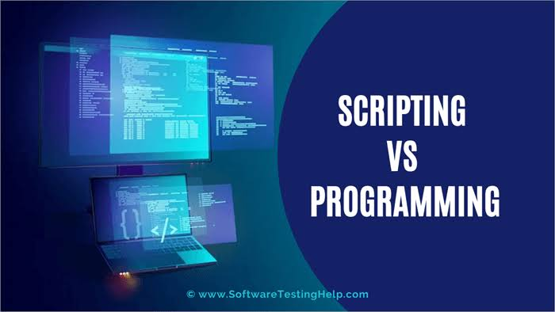

.jpeg)
Preparing you for a great career in the very lucrative industry of Cybersecurity
1. High demand: The field of cybersecurity is experiencing a significant skills shortage, with a growing demand for professionals who can protect digital systems and data.
2. Job security: As cyber threats continue to evolve and become more sophisticated, the need for cybersecurity professionals remains constant.
3. Lucrative salaries: Due to the shortage of skilled cybersecurity professionals, the salaries in this field tend to be competitive.
4. Continuous learning and growth: Cybersecurity is a rapidly evolving field, requiring professionals to stay updated on the latest threats, tools, and techniques.
5. Global impact: Cybersecurity professionals play a vital role in protecting critical infrastructure, intellectual property, financial systems, and personal data.
6. Versatile career options: Cybersecurity offers a wide range of career paths and specializations.
7. Constant intellectual challenge: Cybersecurity is a field that demands analytical thinking, problem-solving skills, and the ability to think like an attacker.
8. Ethical implications: In the digital age, cybersecurity is not just about protecting data and systems but also about upholding ethical standards.
Below is a sample curriculum for this programme
Month 1: (Introductory Concepts)
Week 1: Introduction to Cybersecurity- Overview of the course objectives and syllabus
- Understanding the importance of cybersecurity in today's digital landscape
- Introduction to common cybersecurity terminology and concepts
- Career paths in Cybersecurity
- Collaboration tools and application
- Introduction to virtualization technology and virtual boxes
- Introduction to Linux Operating system and command line
- PC system and softwares setup and configurations
Weekly Hands-on practical session
- Identifying common online threats: malware, phishing etc.
- Understanding the motivations and goals of cyber attackers
- Introduction to social engineering techniques and tactics
- Understanding the psychological aspects of cybersecurity
- Social Engineering attack and social media
- Passwords and password attacks
- Analyzing real-world examples of cyber attacks
Weekly Hands-on practical session on some attack tools
- Secure online communication: Using encryption and secure messaging apps.
- Securing Phones, Computers and Tablets
- Creating strong and unique passwords: Importance of password security and best practices.
- Safe internet browsing: Recognizing and avoiding suspicious links, websites and files.
- Virtual asset security: Blockchain security
- System Hardening
Weekly Hands-on practical session
- Understanding the importance of Windows security in the cybersecurity landscape
- Introduction to Windows security features and technologies
- User account management in Windows (creating, modifying, disabling, and deleting user accounts)
- Understanding Windows user roles and privileges
- Configuring Windows access controls (permissions, rights, and groups)
- Importance of patch management in securing Windows systems
- Windows Update service and configuring automatic updates
- Understanding the Windows Firewall and its role in network security
Weekly Hands-on practical session on Windows security
Monthly Bonus: Building of social engineering attack system and demostration
"A career in cybersecurity offers a chance to be on the front lines of the digital battle, protecting the world from cyber threats and making a difference in the lives of individuals and organizations"
-Anonymous
Month 2: (Information Security Techniques)

- Overview of the course objectives
- Importance of information security in today's digital world
- Basic terminology and concepts in information security
Weekly Hands-on practical session
- Introduction to information security principles and best practices
- Understanding the CIA triad: Confidentiality, Integrity, and Availability
- Exploring different layers of information security: physical, technical, and administrative
- Security goals and objectives
- Common security threats and vulnerabilities
Weekly Hands-on practical session
- Introduction to cryptographic concepts and algorithms
- Understanding encryption, decryption, and digital signatures
- Exploring common cryptographic protocols and their applications
- Hash keys and applications
- Securing cloud provisioned platforms
Weekly Hands-on practical session
- Principles of access control
- Authentication methods and techniques
- Access control systems, surveillance, and monitoring
- Environmental controls and protection measures
- Authorization and access control models
Weekly Hands-on practical session
Monthly Bonus: Guilded study in TryHackMe portal
"By investing in cybersecurity education, we equip ourselves with the tools to make a positive impact and contribute to a safer digital world"
-Anonymous
Month 3: (Access Control Mechanisms, Incidence Response, Business Continuity and Disaster Recovery)
Week 1: Access Control Mechanisms- Introduction to Access Control and its importance in cybersecurity
- Types of Access Control: Discretionary, Mandatory, Role-Based, Attribute-Based
- Access Control Models: Bell-LaPadula, Biba, Clark-Wilson, and Role-Based Access Control (RBAC)
- Implementing Access Control Lists (ACLs)
- Authentication methods: Passwords, Multi-factor Authentication (MFA), Biometrics
- Network Access Control (NAC) and its role in securing networks
Weekly Hands-on practical session
- Understanding Incident Response and its role in cybersecurity
- Incident Response Life Cycle: Preparation, Identification, Containment, Eradication, Recovery, Lessons Learned
- Incident Response Team and their roles
- Incident Classification and Severity levels
- Incident Handling Techniques and Tools
- Legal and Ethical considerations in Incident Response
Weekly Hands-on practical session
- Introduction to Business Continuity Planning and its importance for organizations
- Risk Assessment and Business Impact Analysis (BIA)
- Business Continuity Strategies: Backup and Restore, Redundancy, Failover, Hot/Cold Sites
- Developing a Business Continuity Plan
- Testing and Exercising the BCP
- Business Continuity Plan Maintenance and Review
Weekly Hands-on practical session
- Understanding Disaster Recovery and its role in mitigating the impact of disasters
- Disaster Recovery Life Cycle: Assessment, Planning, Implementation, Testing, Maintenance
- Developing a Disaster Recovery Plan (DRP)
- Disaster Recovery Strategies: Data Replication, Backup and Recovery, Failover, Virtualization
- Testing and Exercising the DRP
- Disaster Recovery for Cloud-based services and hybrid environments
Weekly Hands-on practical session
Monthly Bonus: Access to cybersecurity webinars and conferences
Month 4: (Programming, Scripting and Process Automation)

Week: Introduction- Introduction to programming and scripting and its significance in cybersecurity
- Understanding programming concepts: variables, data types, control structures
- Introduction to scripting languages for cybersecurity automation (Python, PowerShell, Bash)
Weekly Hands-on practical session
- Introduction to Python and installing Python
- Python Syntax, Variables, and Data Types
- Operators, Expressions, and Conditional Statements
- Loops and Functions in Python
- Lists, Dictionaries, and Strings in Python
- File Handling and Error Handling in Python
- Modules, Libraries, and Regular Expressions in Python
- Web Scraping
Weekly Hands-on practical session and projects on python
- Introduction to PowerShell and setting up PowerShell
- PowerShell Syntax, Variables, and Data Types
- Operators, Expressions, and Conditional Statements in PowerShell
- Loops and Functions in PowerShell
- Arrays, Hash Tables, and Strings in PowerShell
- File Handling and Error Handling in PowerShell
- Introduction to Active Directory and PowerShell for Active Directory management
- PowerShell Remoting and Incident Response
Weekly Hands-on practical session and windows automation projects
- Introduction to Bash and setting up Bash
- Bash Syntax, Variables, and Data Types
- Operators, Expressions, and Conditional Statements in Bash
- Loops and Functions in Bash
- Arrays and String Manipulation in Bash
- File Handling and Error Handling in Bash
- Process Management and Shell Scripting Best Practices
- Linux Security and Bash for Security Automation
- Scripting for Security Automation
Weekly Hands-on practical session and Linux bash scripting projects
Monthly Bonus: A course on Github and Gitbash
Month 5: (Networking and Network Security
Week 1: Introduction to Networking Fundamentals- Overview of computer networks and their importance
- Introduction to network topologies and architectures
- OSI and TCP/IP models
- Basics of networking protocols (e.g., TCP, UDP, IP)
- Introduction to network devices (routers, switches, modems)
Weekly Hands-on practical session
- Understanding Local Area Networks (LANs) and their components
- Ethernet basics and LAN cabling
- IP addressing (IPv4 and IPv6)
- Subnetting and subnet masks
- Network configuration (IP assignment, DNS, DHCP)
Weekly Hands-on practical session
- Introduction to Wide Area Networks (WANs) and the Internet
- Internet Service Providers (ISPs) and their role
- Different methods of Internet connectivity (DSL, cable, fiber, wireless)
- Introduction to routing and switching
Weekly Hands-on practical session
- Understanding network security threats and vulnerabilities
- Introduction to network security mechanisms (firewalls, IDS/IPS)
- Authentication and access control methods
- Network security policies and best practices
- Introduction to network monitoring and incident response
Weekly Hands-on practical session
Monthly Bonus: Training and practical sessions on computer networking with Cisco Packet Tracer Environment
Month 6 (Cybersecurity Career)

- Understand the role of security operations centers (SOC) in cybersecurity
- Introduce security incident and event management (SIEM) systems
- Learn about log analysis, threat hunting, and incident response in a SOC
- Discuss security monitoring best practices
- Case studies on effective security monitoring and incident response
Weekly Hands-on practical session on some SOC tools
- Understand the importance of data privacy and compliance in cybersecurity
- Discuss data protection laws and regulations, such as GDPR and CCPA
- Explore privacy-enhancing technologies and techniques
- Discuss compliance frameworks, such as ISO 27001 and NIST Cybersecurity Framework
- Real-world examples of data breaches and their impact on privacy
- Learn about threat intelligence and its role in cybersecurity
- Understand the different types of threat actors and their motivations
- Explore sources of threat intelligence and how to leverage them
- Introduce threat hunting techniques and tools
- Analyze real-world cyber threats and incidents
Weekly Hands-on practical session
- Conducting vulnerability assessments using different tools
- Explore penetration testing methodologies and tools
- Reporting and remediation of vulnerabilities
Weekly Hands-on practical session
- Introduction to the basics of cloud computing and its security challenges
- Introduction to Cloud service providers
- Understand the shared responsibility model in cloud security
Weekly Hands-on practical session

On weekly basis we incorporate the following Career Soft Skillsinto our lectures
Month 7: Examination and Certification

Free examination preparatory classes and revision for entry level professional certification examinations
While CyberBill Africa will issue a certificate of course completion to all successful graduands, we nevertheless encourage all our students to sit for and aquire Internationally recognised certifications in their chosen fields Some of these certifications may include that offered by (ISC)², CompTIA, C-Council, Cisco etc
👉 Cost of programme: $3000/N220k
Check out more courses

Abridged Cybersecurity Course
Don't have enough resources/time to run a complete program on Cybersecurity Analyst? Kick off with an abridged version of the coursethat will teach you general Cybersecurity but without specialization

Full Programming Package
Knowledge of programming and software development is vital in today's world where programs, softwares and apps runs the world continue reading...

Teenager/Student Package
Cybersecurity and programming education for teenagers is important as it teaches them how to protect their personal and sensitive information online and prevent cybercrime threats such as identity theft or online bullying. Teenagers need to learn how to create strong passwords, recognize phishing scams and understand how to use privacy settings on social media platforms. Cybersecurity education can also lead to career opportunities in the growing field of cybersecurity.